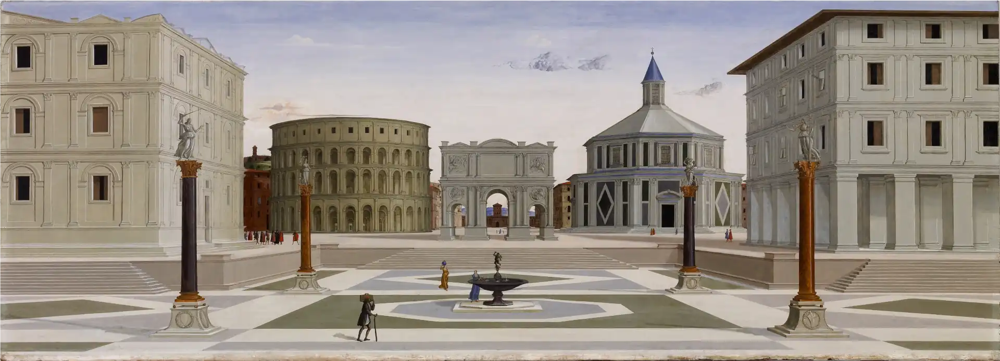
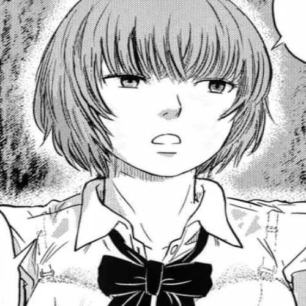

Blog
|
Fotos

SeñorB (página oficial)
"El destino de la destrucción es también la alegría del renacimiento"

¿Que estoy leyendo?
¿Que uso para navegar la Web?
Enlaces a mis perfiles secundarios
Las Flores del Mal